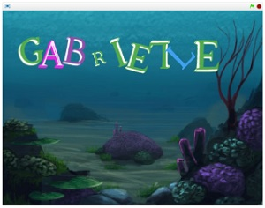

Name Assignment

Description:
Use scratch to design and create a program that shows my name. The requirements were to have a sprite for each letter of you name that had at least 3 unique behaviours. The program needed to run when the green flag was clicked and, for extra credit, I had the program reset whenever the space bar was clicked.
Concepts Learned:
- Using event blocks - green flag clicked, when key is pressed.
- Conditional statement - I used if statements to have the program reset if the spacebar is pressed.
- Used Loops - I used a forever block to have my sprites change costumes repeatedly and a repeat until block to have a sprite spin until the spacebar was pressed to stop it.
- Sprites - I used the scratch library to find letter sprites for my name and adjusted the colors for when the sprites would change costumes.
- Movements - I used a turn block to have one of my sprites spin, a point in direction black to have a sprite lay on its side rather than standing straight up, and a glide block to have one of the letters shift on the y axis. All of these are operated by the green flag clicked event block.
Computer Buying Project
Description:
Use Scratch to create a presentation demonstrating the differences between computers. The goal of the project was to interview people on their computer preferences and then pick a computer for them that best suits their needs. The entire presentation had to be on scratch and we needed to have at least 4 different computers to compare. We had to weigh the pros and cons of each computer, then pick the computer that was most similar to the person’s preferences and needs.
Concepts Learned:
- Event Blocks - using broadcast to create a flowing animation without pressing keys.
- Sound - Adding music to the background to prevent it from being boring.
- Look Blocks - using say this for this many seconds blocks to have the sprites speak.
Final Project
Description:
Use scratch to create an original game that had multiple increasingly difficult levels, a timer, lives, and stops and resets when the game is over. For this project, I made a scrolling game where you had to reach the castle at the end of the level to go to the next one. The game also had dragons that would take lives if you touched them and pitfalls.
Concepts Learned:
- Event Blocks - using when this sprite is clicked blocks to start the game.
- Look Blocks - using show and hide blocks to get rid of dragons, reset the game, etc.
- Sensing Blocks - using when touching this blocks to prevent the sprite from falling through the floor and insure it falls when it is not touching a platform.
- Operator Blocks - Using addition and multiplication operators to have the platforms scroll and the dragons move from side to side.
- Data Blocks - Creating variables to have lives, a score, and make the platform scroll on the x axis.